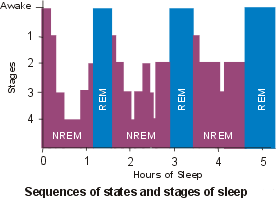
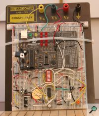
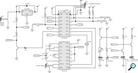
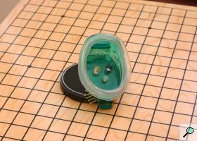
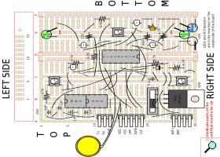
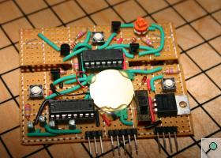
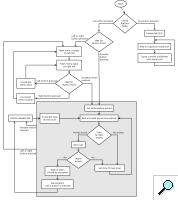
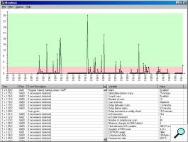

What is Morpheus?
Morpheus was the name given to a new micro controller-based project of mine. The goal of this project was to build a circuit that would monitor a person's sleep activity and, eventually, give feedback on that activity to the user. The purpose of this was to induce lucid dreaming in the subject.
Theory
When sleeping, people generally alternate between different cycles. Those cycles are often described as REM cycles, that is Rapid Eye Movement cycles, and non-REM cycles. While the brain activity during non-REM cycles has distinguishing features, the brain activity during REM cycles is nearly identical to that that occurs when a person is awake. In addition to brain activity, several physiological signs of REM activity can be observed, the most obvious of which is the movement of the eyes.
Since most dreams occur during the REM cycles and since brain activity during REM is close to that of a conscious mind, it is possible to achieve consciousness during a dream. The problem, of course, is that dreams seem real: it is hard to realize that dreams are dreams and not reality. One way to do this is to learn to recognize signs: in dreams, things that do not usually happen in real life, such as flying elephants or malfunctioning equipment like light switches. Another way is to have a device that would monitor the person and give a signal when REM sleep is detected. That signal can be a visual or auditory cue, strong enough to be noticed but weak enough to prevent the person from waking.
Since the moving eyes can be seen through the eyelids during REM, it should be possible to build a device to detect this movement and give visual/auditory cues to the user. This can be done by shining a light at the eye and measuring the amount of light that is reflected; when that amount changes, it means that the eye is moving. To avoid awaking the user when probing, an infrared light and infrared detector can be used.
Requirements
The following requirements were desired in the REM detector:
- Ability to detect eye movement (obviously)
- Ability to give visual signals to the user
- Ability to give auditory signals to the user
- Simple interface
- Ability to easily communicate with a PC
- Ability to record REM data
- Battery-powered
- Micro-controller should be reprogrammable without needing to remove the chip from its socket
Prototype
As with my previous project, I decided to use a PIC micro controller to be the core of the device. Due to the increased input/output demands, I used the PIC16F676 micro controller, which offers 12 general purpose I/O as well as comparator, analog to digital converter, etc. Like the PIC12F675, this micro controller provides a 4 MHz internal oscillator, which I used in this project.
{kind=link}
The concept of detecting eye movement is simple enough: shine an infrared light on the eye and measure the amount of light that is reflected. The first thing I tried was to use the micro controller's onboard comparator to detect changes in reflected light. By putting a resistor in series with the IR transistor, I could compare the voltage measure with a fixed voltage. That fixed voltage would be given by a potentiometer, which would need to be tuned. The main problem I had with this technique was the oscillations: when the two voltages were nearly equal, the result of the comparison rapidly oscillated between LOW and HIGH. When the comparator was oscillating like this, it was impossible to know if there was movement or not.
To solve the oscillation problem, I added a hysteresis to the comparator. By having a feedback from the comparator output to the positive input, a 'buffer' was created: when the result of the comparison was HIGH, then the required voltage to get a LOW comparison was lowered. When the result of the comparison was LOW, the required voltage to get a HIGH comparison was raised. This solved the oscillation problem, but uncovered another.
{kind=link}
While the comparator worked to detect changes in voltage, that voltage needed to stay around a calibrated value. That means that if the device were to be moved slightly, the amount of reflected IR light would be different and the comparator would not detect any changes. To solve this, I decided to use the micro controller's digital to analog converter instead of the comparator. While this would make the software more complex, it would allow greater accuracy and flexibility. The exact voltage would be sampled multiple times by the A/D, and then compared to the previous value. A difference of more than x volts would mean that there had been an eye movement. After a certain threshold of movements had been detected, it would mean that REM had been detected.
Initially, I had used an old pair of swimming goggles to mount the IR led and IR transistor. This would allow the components to be kept in front of the user's eye. However, in practice it was shown to be too uncomfortable to be of any use. I decided to keep using the eye-piece for prototyping while the final version would have the detection components placed directly on the circuit board. The circuit board would then be held in place in front of the eyes using a sleeping mask.
{kind=link}
Another problem that I encountered was that the micro controller pins could not provide enough current to effectively drive the infrared LED and signaling LEDs. This was solved by simply adding NPN transistors: the micro controller would then only be used to turn on the transistors, which in turn would drive the LEDs.
To address the issue of PC connectivity, I chose to use a serial port interface. A USB interface would have been too expensive and/or complicated for a small project like this. A MAX232 chip was used to bring the 0-5V supply from the battery to the required -8V to 8V that is required by the RS232 standard. Since the micro controller I was using lacked a dedicated serial interface, I resorted to bit-banging to generate the serial signals. A special mode was added in the software: when one of the buttons was held down while the machine was booted, the software would enter RS232 mode where it would await commands from the PC. As soon as anything was received from the PC, the software would dump the content of the EEPROM as well as of some other variables onto the serial port.
{kind=link}
To power the device, I chose to use a 9V battery whose voltage would be regulated down to 5V. When the REM detector was turned on, the A/D would be used to probe the voltage coming from the battery. A simple voltage divider was used to bring the voltage in the 0-5V range. The amount of power remaining in the battery would then be indicated to the user using the LEDs. In order to prevent power from being wasted in the voltage divider, a switching transistor was added. That same transistor was later used to turn the MAX232 chip on and off, again to preserve power.
To provide auditory cues, a buzzer was used. Buzzers need a periodic signal of a specific frequency to work, which I generate with the micro controller by toggling one of the port pins HIGH and LOW at a specific rate. Visual cues were given using two high-intensity leds. The LEDs are used both for menu navigation and feedback to the user and for visual cues during REM. Pulse-width modulation can be used to control the intensity of the LEDs: by flashing the LEDs on and off at a frequency of at least 60Hz, they appear to stay at a constant brightness. However, there is a minimum intensity that can be set -- any lower and the LED can be seen to be visibly turning off and on.
Hardware
Since the final circuit would need to be placed in front of the user's eyes, it needed to be made as small as possible. Using a vector drawing software, I copied the layout of a perforated circuit board available at radio shack. I then figured the best way of placing to components to minimize area. I then used a rotary tool to cut off the pieces of the board that weren't going to be used. When I began placing the physical components on the board, I had to move the LEDs and IR transistor slightly as they were slightly larger that expected.
{kind=link}
The two grooves on both sides of the PIC16F676 micro controller are there to allow the device to be attached a sleeping mask: two slits are cut in the mask and the parts of the circuit board on which the LEDs and IR transistor are mounted are slided through. This way, most of the solder side of the board is covered by the sleeping mask (otherwise, the metal pins would be rather painful against the user's face).
The LEDs and IR transistor are mounted on the opposite side of the board. This allows the relatively flat backside of the board to be placed against the user's face without discomfort.
Software - PIC16F676
As with my previous project, the software for the micro controller was written in assembler. As an improvement over my last project, the REM detector used interrupts. The interrupts handled included changes on the button pins (followed by a delay of 15ms for debouncing) and TIMER1 overflows. A general flow chart of the execution of the program is provided to the right.
{kind=link}
The A/D on the PIC16F676 is 10 bits while the memory is 8 bits, two of the bits of the conversion result are difficult to use. Since I wanted a maximum of precision, I chose to make use of the least-significative 8 bits. Because a result of 0xFF and 0x00 should only have a difference of 0x01, I had to check the results of my subtractions and complement the result if the value didn't make sense.
While reading the EEPROM is rather straight forward, writing to it is a different matter. I wrote a function that, given a data register and an address, would write the data to the EEPROM, then verity if the data was written correctly. If it was not, the write is retried.
Extensive use preprocessor directives was made in the software. This made testing easier: for example, while the REM detector only scans every 2.5 minutes, that time needs to be shortened while testing. If the variable TESTING is defined, the timer code will be different to allow for faster scanning.
Software - PC
The PC client for Morpheus was to be used to analyze the data collected by the Morpheus hardware. Since I was already familiar with Java, and wanting to try SWT interfaces, I decided to write the software in Java.
The requirements for the software were simple: it needed to show the collected data in a graphical way as well as allowing for closer inspection of the data. It had to be able to import the data directly from the hardware using the computer's serial port. A few other features were added as a convenience, such as the ability to load and save data and the ability to load data from .HEX microcontroller memory dumps.
Communication over serial port was done using the Java Communication API package form Sun. All of the serial communication was handled by a separate package: this would allow me to easily create different packages for the various architectures Morpheus would run on (e.g. Windows and Linux).
{kind=link}
Importation of data, either from serial port or from .HEX dump, would consist of writing the raw EEPROM data to an array. Various configuration values, such as the delay between each REM scan, would also be read, either from values in the .HEX file or from the serial stream. Those values would be saved alongside the raw data for processing. When saving and loading the data, only the raw data and configuration values would be saved.
Once the raw data was imported (or loaded from file), another class would be used to process the data. The raw data would first be uncompressed (more on that later) and a chronological sequence of event would be generated. This processed data (as well as the configuration data) would then be used to fill the tables in the main window for analysis by the user. A graph would then be generated to show the data in a more intuitive way.
Since the data written to the EEPROM would be processed by software rather than by humans, many optimizations could be made to make best use of the limited EEPROM memory. For instance, I had initially used a logging system where an ID would be written for event identification, followed by a code indicating the time elapsed since the last event. However this technique was very inefficient as each event was using two bytes in the EEPROM memory. Since the time between most events was predictable, I was able to drop the elapsed time code from the EEPROM. User-triggered events, such as the 'Reality Check' event, still required the elapsed time to be written; however, most events were not of this type, so memory usage was improved by roughly 50%.
A second improvement that was made was data compression. Upon observing the raw EEPROM data, one could see that much of the data was simply repetitions: codes indicating that no movement was detected (e.g. 0xB0, 0xB0, 0xB0, 0xB0...) was using most of the memory. A simple compression scheme was devised to remedy this: instead of repeating a code twice, a special code would be written which would indicate that the previous code should be repeated x times. For instance, the sequence '0xB0 0xB0 0xB0 0xB0' would be replaced by '0xB0 0xD2'. Again, this modification yielded an improvement in memory usage of roughly 50%.
Additional Documents
Schematic files: circuit diagram - PC board layout
Code for PC16F676 (version 0.1, not completed!): source (.asm) - compiled (.hex)
Java client code (version 0.1, not completed!): source (.java) - runtime (.jar, windows only) - launch with Java Webstart
Notes
Original idea for REM detector obtained from Kvasar dreammask. 'Sequences of states and stages of sleep' image taken from Sleep Strategy on www.ar.co.za.